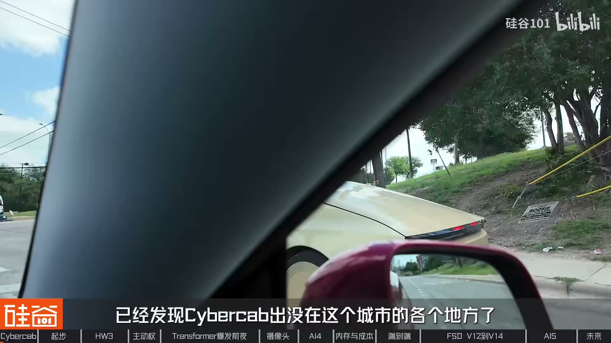
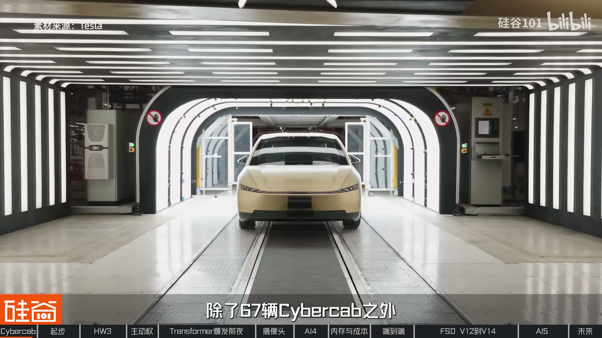
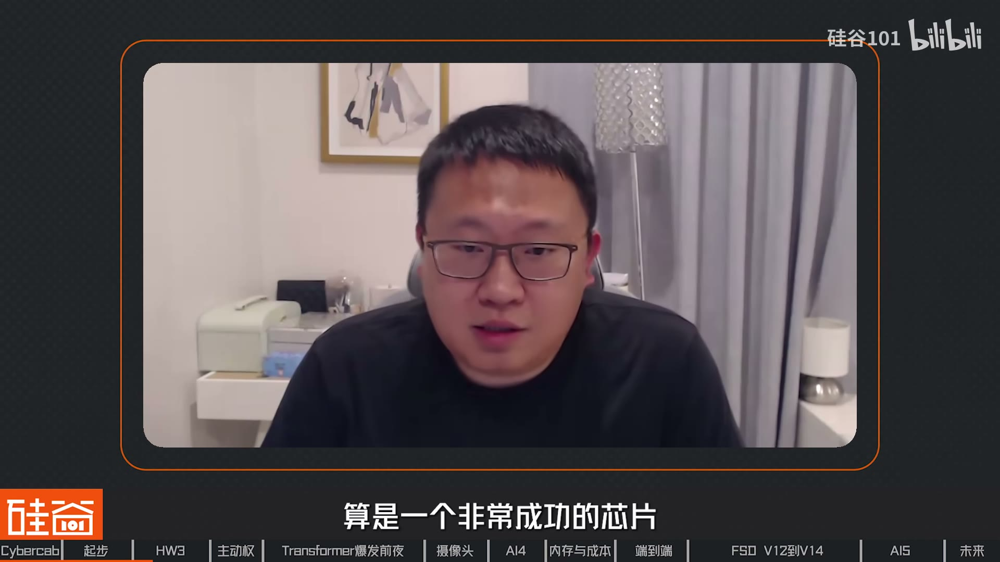
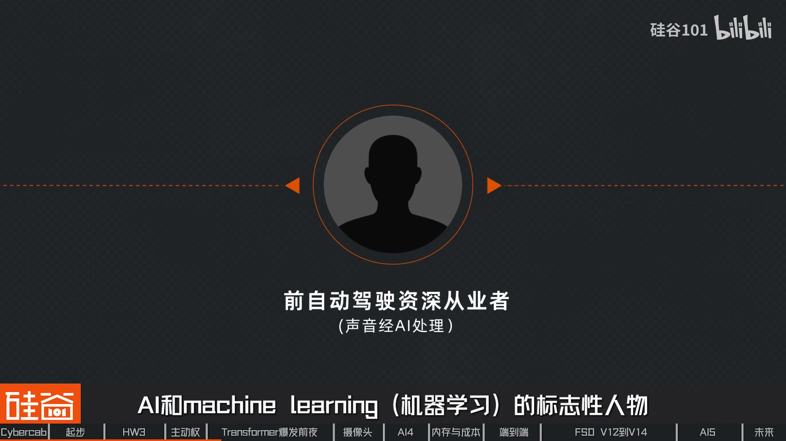
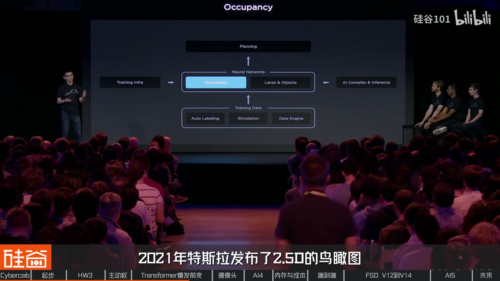
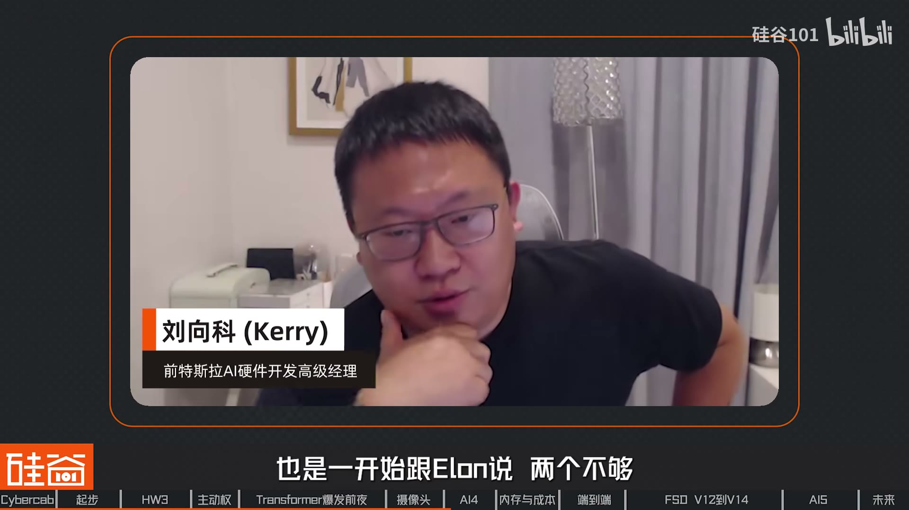
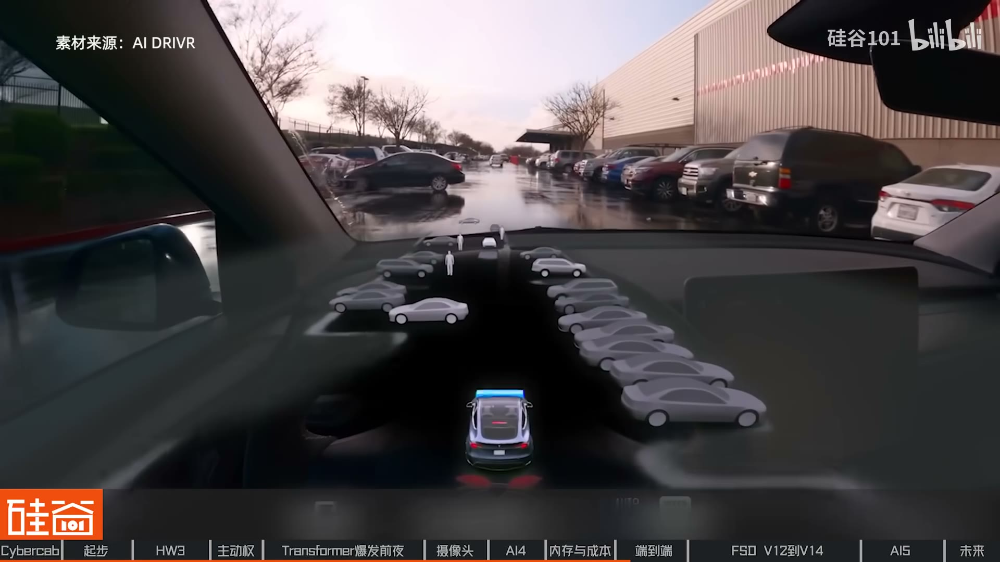
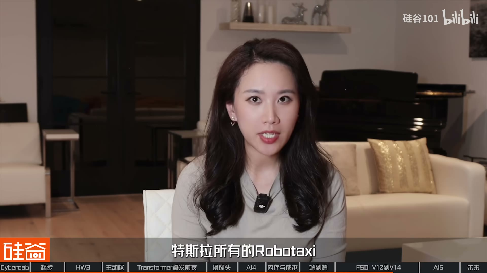
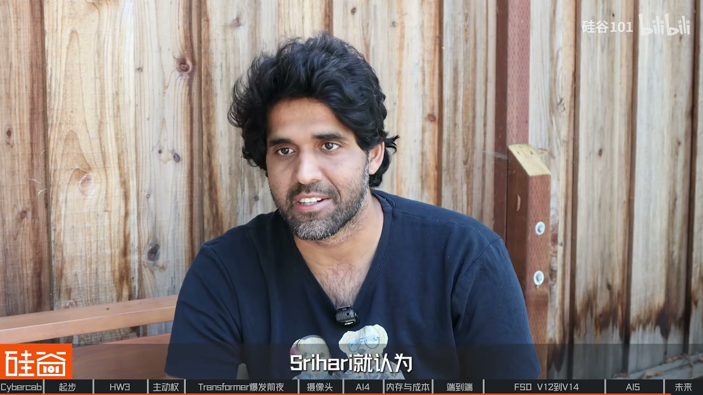

内容要点
硅谷101 横跨数月采访特斯拉十余年硬件/软件工程师，并实地体验奥斯汀 CyberCab：无方向盘、远程监管兜底。主线是 FSD 硬件从 Mobileye 黑盒→英伟达过渡→自研 AI3/AI4/AI5，软件从规则感知到 HydraNet/BEV/占据网络再到端到端 V12–V14；对照 Waymo「谨慎划界」与特斯拉「量产车数据飞轮」。收束：技术路线之争进入下半场经济之战——Waymo 运营仍领先，CyberCab 刚起步且面临监管，特斯拉证明激进路线仍留在决赛圈。
知识结构
奥斯汀体验；与谷歌分道；Mobileye 分手；八摄+英伟达双芯片冗余。
Jim Keller/Peter；AI3 流片；Karpathy；HydraNet/时序/BEV。
供应链催生纯视觉；占据网络；HW4 像素/芯片数/GDDR 拉扯。
V12 替换规则代码；V13/V14 放大模型；远程监管扩城。
Dojo 叫停；AI5 瞒报与双工艺；经济之战未分胜负。
特斯拉 FSD 的「差分」不是单点算法，而是愿意把未成熟系统装进数百万量产车、用成本与风险偏好倒逼工程闭环；下半场胜负手是规模化安全下的单位出行成本，而非摄像头 vs 激光雷达口号。
00:00-07:00CyberCab 开场：两条路线如何分道
开场坐进奥斯汀刚运营的 CyberCab：无方向盘、无踏板；后台远程工作人员兜底，乘客有 Emergency Stop / Pull over。德州登记 Robotaxi 约 476 辆，其中 CyberCab 67、其余多为带方向盘的 Model Y。
2013 年特斯拉想做自动驾驶，谷歌高精地图+激光雷达太贵且主张一步 L4；马斯克坚持 L2 迭代到 L4，双方分道。特斯拉先找供应商：Hardware 1.0（单前摄+毫米波+超声波+Mobileye EyeQ3）。2015 Autopilot 上线惊艳但也诱发误用；2016 佛罗里达致死事故后与 Mobileye 决裂——根因不止事故，更是感知黑盒接口无法由特斯拉掌控。HW2.0 八摄换 NVIDIA Drive PX2，HW2.5 加冗余 GPU，自研算法六个月内替换 Mobileye。


07:00-21:00AI3 自研与感知四大升级
2016 引入 Jim Keller、Peter Bannon；在三星协助下 AI3 约 18 个月设计、首次流片近乎可用——专为神经网络场景优化，利用率远高于通用 GPU。AI3 量产前三个月软件人手极度不足，硬件团队 hack 自测；自研换来成本与主动权（含逼 TI 降价、英伟达驱动扯皮等供应商故事）。
Karpathy 入局后重构感知：深度学习替代手工任务；HydraNet 共享 backbone 多任务头；从单帧图像走向时序视频记忆；多摄融合到 BEV。2017 Transformer 论文改写 AI 史，而 HW3 仍偏 CNN 时代设计——为后续端到端埋下算力与架构张力。


21:00-38:00去雷达、占据网络与 HW4 拉扯
2021 移除毫米波雷达：口播称真实触发是疫情供应链（Continental 等供不上货被马斯克「拉黑」），而非纯技术成熟。纯视觉需补测距；Occupancy Network 用体素表达任意形状障碍，靠自动标注与少量激光雷达采集车做 ground truth。
HW4 全板重设计：摄像头 1.2MP→5MP、布局被砍又因盲区在 Cybertruck 前杠补回；软件要三芯片、量产前被砍回双芯片；改用 GDDR 追带宽却遭遇车规容量瓶颈（内部讨论改回 LPDDR 的 HW4.3）。成本仍压到「普通 iPad」量级；AI4 芯片亦进服务器做像素注入仿真与决策回放验证。


38:00-52:00端到端 V12–V14 与 Robotaxi
Karpathy 离开后，工程师提出用神经网络替代规则（「车用 ChatGPT」），击中马斯克：端到端把约 30 万行代码压到极少控制输出。2023 公开演示虽闯红灯却被业内视为强信号；V12 落地验证可行性，V13 简化控制栈、光子直入模型，V14/14.1 参数再放大并用强化学习等——内部喻为种树：存活→剪枝→施肥。可解释性靠中间 3D 表征头；验证靠世界模型仿真。
Robotaxi：硬件与量产车同源，软件更新更勤、获 L4 运行资质；关键差异是远程监管——扩到数千上万辆时，人工兜底成本与安全证明才是扩城瓶颈。


52:00-62:35AI5 风波与下半场经济之战
Dojo 训练集群被叫停，马斯克称 AI5/AI6 可兼训练。AI5 完全自研后人手/经验不足，项目主管瞒报进度，台积电指出图纸远未可流片，马斯克震怒裁撤；后双线并行（外包+三星回流），三星版 AI5 已流片，亦有「AI5 主要进算力中心/机器人、车上 AI4 够用」的内部变数。
收束：特斯拉敢用新技术、流程少、盯产品；与 Waymo「九线区域谨慎扩张」对照。13 年后路线未分胜负，战争改名经济之战——Waymo 运营领先，CyberCab 有限区域起步且遭监管调查。真正难题：无安全员、无方向盘时面对百万次真实出行能否稳住安全，并把成本打到大规模商业化。

完整转录（1622段）
以下文本由 Whisper medium 模型自动转录，可能存在少量识别误差，已尽可能修正。
正在行驶的是一辆没有方向盘的车
而我正坐在他的驾驶座上
而他也没有任何的脚踏板
这就是9月刚在德州奥斯丁投入运营的
特斯拉CyberCap马斯克说
这就是未来交通的样子
那其实早在我们今年5月中旬去奥斯丁的时候呢
已经发现CyberCap出没在这个城市的各个地方了
经过数月的测试
CyberCap终于迈入了一个心理成碑
我们知道特斯拉FSD的发展故事
一路上是伴随着各种的丑闻 诉讼和质疑
自行驾驶技术有很长很长的路要走
还是一个重要的失败
这是最糟糕的一部分
这样的舆论伴随了特斯拉FSD十几年
所幸FSD一直没有停止进步
但是进步是艰难的
在马斯克这个抠门老板的带领下
特斯拉自动驾驶的硬件研发总是反复拉扯
多次推导重来
直到上线前还在加班修改
他就气得拍桌子
然后就开始Fword了
从供应商的决裂 自研芯片的豪赌
甚至团队一度出现了瞒报与欺骗
伊朗一听这个事就知道
你们这帮做芯片的人明显就是胡诱我
然后伊朗就发了很多人
与此同时 软件团队永远抱怨着
算力不够用 人员不足
却在极致的成本控制中倒逼出了极致的技术路线
你给我使词
那我们这期视频的写稿采访和制作
横跨了几个月的时间
我们对谈了在特斯拉工作十余年的工程师
也去到现场体验了特斯拉的无人驾驶车
这个视频我们从硬件和软件两条线
详细的拆解一下特斯拉FSD的进化史
大家不要忘了关注我们的频道
也记得给我们点个赞
接下来就让我们进入FSD的世界
今天是美国时间9月23号
我们从硅谷飞到了德州的奥斯丁
带大家来体验一下CyberCab
好 我们的CyberCab马上就要来了
我们也等了大概有8分钟的样子
其实比我们想象中等待时间要短
看我们的CyberCab已经到了
然后Star Ride
这是我第一次坐上CyberCab
我自己是Model Y的车主
之前也开过Model 3
但是很明显整个车比Model Y要缩水了一大圈
甚至我觉得比Model 3都还要小
我们坐进来之后发现它只有两个人的座位
我坐在本来该是驾驶员位置的左侧
但这边它没有方向盘
也没有脚踏板
没有加速板
说实话心里面还是有一点小忐忑的
但是我知道在目前的运营阶段
Tesla有启动安全机制
由于CyberCab采用了
无方向盘和无刹车踏板的原生无人车设计
车内乘客在遇到紧急情况时
无法进行物理接管
为了保证安全
Tesla在后台配备了远程工作人员来进行兜底
那我也知道新链会进行网络的保障
乘客也有一键紧急避险Emergency Stop
这样的一个按钮
Pull over的请求
并且自动连通Robotaxi的专属服务
所以我们目前的安全指数可以说是很高
截止今年9月12号
Tesla在美国德州登记的
自动驾驶车队Robotaxi总数
增加到了476辆
除了67辆的CyberCab之外
其余的409辆
依然是配备方向盘的Model Y车型
那Tesla的FSD是如何做到目前的程度呢
这一切要从一个黑盒开始说起
2013年已经成立了10年的Tesla
开始决定做自动驾驶
而且最初希望合作的公司就是谷歌
但是谷歌高定地图加激光雷达的方案太贵
不符合马斯克的第一性原理
同时谷歌主张一步到位直接做L4
而马斯克认为应该先推出L2再迭代到L4
为此双方分道扬镳
也让自动驾驶诞生出了两条路线
并且争论至今
可是Tesla当时的状态
别说自演了
连活下去都费劲
那最现实的路径就是先找个现成的供应商
于是他们选择了Model Y
2014年10月
Tesla发布了Autopilot Hardware 1.0
全车的硬件非常基础
只有一个前置摄像头
一个前置毫米波雷达
再加12个超声波传感器
芯片为Model Y IQ3 500mHz频率
256MB的内存
放在如今肯定是不够看的
因为在早期车规的技术上
它的局限性非常的大
一个不得不采用的方案
因为你没有别的选择
那这是Henry Liu
他在Tesla工作了近12年
参与了能源自动驾驶机器人等多个项目
负责AI相关的硬件开发
他告诉我们硅谷101 FSD13年的研发
中间有太多的曲折故事
2015年Autopilot软件正式上线
虽然当时只能实现车道保持
自适应巡航等基础功能
但对于当时的车主来说
这已经非常惊艳了
要知道那个时候大部分的车
甚至都还没有标配定速巡航
有的人在车里吃汉堡
有的人在副驾睡觉
直接把Autopilot当成了无人驾驶
2016年5月7号
佛罗里达州一辆Model S
撞上了正在左转的拖管货车
车主当场身亡
事故发生的原因在于
辅助驾驶系统没有识别出货车
在此前Mobile AI就警告过马斯克
禁止驾驶员双手离开方向盘
但是没有被当回事
这次事故是成了双方彻底弹崩的催化剂
为什么只是催化剂呢
那这里我们先来说说
特斯拉第一代的Autopilot是怎么做的
自动驾驶主要分成三个流程
感知规划之行
特斯拉与Mobile AI合作的时候
感知部分算法完全由Mobile AI垄断
规划与控制由特斯拉自己主导
Mobile AI提供的是典型的黑盒Black Box模式
摄像头捕捉到画面之后
直接输入到Mobile AI的IQ3芯片当中
计算结果之后
再传递到规划层
当然这个可能也是当时分裂的原因
这个需要你强行需要两边定一个接口
然后这个接口之下
Mobile AI的内容肯定是黑盒
不提供给Tesla
这点其实就非常阻碍Tesla的开发
因为有时候你想跨越这个接口
或者更改这个接口
但你没有这个控制权
所以真正让特斯拉和Mobile AI分手的原因
是因为合作不畅
此后特斯拉开始一手读览算法部分
硬件系统也有了新的合作商
但是市场却不满账了
2016年10月距离事故仅5个月
特斯拉发布了Hardware 2.0
这次传感器从一个摄像头变成了8个
芯片从Mobile AI换成了NVIDIA Drive PX2
你别看这个摄像头的数量它变多了
但是在当时的作用并不大
我觉得8个摄像头它可能是Design for Future
就是说你未来可能想要做到全自动驾驶
那你不可能只有前面的摄像头
但就当时我觉得
其实要取代Mobile AI的功能来说
未必我觉得需要用到这么多的势力
去把每一个摄像头的芯片都处理好
不过很快特斯拉内部发现了Hardware 2.0存在缺陷
于是在发布10个月之后
又推出了Hardware 2.5
这两者的核心区别就是荣誉
因为Hardware 2.0是特斯拉第一次用英伟达的方案
当时的英伟达也并没有专门针对辅助驾驶做芯片
所以在结构上就是一个SoC
再外挂一个GPU
但问题是马斯克当时已经在推全自动驾驶了
得考虑一个很现实的问题
万一芯片坏了怎么办
你得有备用方案吧
所以到了Hardware 2.5
特斯拉多加了一个GPU作为数据
这就是特斯拉FSD双芯片架构的出行
与此同时特斯拉也在6个月内
通过自研替代了Mobile AI的算法部分
还新推出了FSD
英伟达和以前大不一样
但是初期表现却没有与其中那样的顺利
Mobile已经做了那么多年迭代下来
就算它技术比较弱厚
肯定也还是各方面比较完善一些
一类新的团队从0到1开始做
反开始有各种问题我觉得也非常可以理解
不过英伟达芯片也只是个过渡方案
接下来特斯拉FSD才真正开始发力
2019年4月
特斯拉发布了Hardware 3.0
用自研的Ai3芯片替换掉了英伟达芯片
其实采用自研芯片是迟早的事
早在与Mobile AI合作的时候
特斯拉就开始布局这条路了
我们先把时间拨回到2016年
当年1月马斯克巴来了芯片设计界的传奇人物
Jim Keller
他在AMD设计了K7、K8架构
在苹果设计了A4、A5芯片
又回到了AMD研发了Zen架构
后来还去了英特尔
2月Peter Bannon也加入了特斯拉
他的履历同样硬核
加入特斯拉前就有了近40年的计算系统设计经验
曾在苹果、英特尔、PA、Semi的公司正值
领导了苹果A4到A9处理器的开发
在这两枚芯片大神的带领
以及那三星团队的帮助下
第一款FSD芯片也就是Ai3
只花了18个月就设计出来了
并且在2017年12月首次流片成功
整个过程非常顺利
他当时甚至第一次流片出来
这个芯片就基本上已经没有毛病了
最后只是稍微小改了一下
然后做了第二版
然后就量差了
后面就再没改过了
所以Howell3算是一个非常成功的芯片
因为你要知道做处理器这种芯片
你不论放在Intel、AMD
不管哪家公司一次流片能够做好的
那是凤毛的印记
很多芯片第一次流片出来
连开机都开不了
而且当时用了14nm的制程相对比较成熟
这款自言芯片的一大优势就是性能强
相比Howell2.5采用的英伟达PASCO芯片
AI3不仅神经网络算力提升了5倍以上
在其他各项参数上都有了显著的提升
那为什么能够提升这么大呢
是因为这是专为自动驾驶场景设计的芯片
和之前通用芯片架构完全不同
芯片算力不能光看纸面上的参数
像英伟达的芯片因为是通用的
那里面会包含线程调度、内存访问
分支预测等等任务
在执行神经网络任务的时候
实际利用率很难跑上去
而特斯拉定制的芯片
专为实际任务场景做了优化
有效利用率能够达到80%
相比通用芯片是提升了50%之多
而就在AI3即将量产的节骨眼上
Jim Keller离开了特斯拉
由Peter Bannon接手整个硬件团队
先别着急为特斯拉担心
因为在业内看来
他的离开早已注定
我跟他一些别的朋友聊天这个事情
就是大家给我的一些反馈
就说Jim Keller这个人是一个
非常喜欢做从零到一的工作的这么一个人
他不喜欢做从一到十的事情
他之前不论在苹果还是在AMD
他都是把芯片从无到有做出来
然后在芯片做出来之前
他就会走
我想这可能也是为什么
他能够愿意来特斯拉的原因
因为特斯拉要做芯片
这个事情在当时就属于一个
从零到一的事情
虽然AI3芯片的开发过程很顺利
但是咸有人知的是
在整套Hardware 3.0量产前的三个月
特斯拉内部连轴转到几乎崩盘
而原因既然是因为马斯克太抠了
他不喜欢招人
其他到今天为止
包括机器人FSD
他的软件团队其实人都很少
他们要同时支持
已有的还在量产的Hardware 2.5
然后又要同时写这Hardware 3的软件
他们明显就是人手不足
做不到
没有软件配套
我们很多东西
很多产品的芯片的测试
包括很多功能上要想去跑一下什么之类的
都做不到
所以当时我就记得印象特别深
我们就是各种Hack
就是自己传软件
自己写一点什么指令
然后来模仿他们软件上的一些东西
然后自己跑自己测
量产的前三个月
那时候伊朗说不行了
必须要开始搞Hardware 3了
整个软件团队就只剩三个月时间
我们硬件团队也要配套做测试
你给他们三个月
那就像没给我们时间
所以当时他们写一点软件
我们硬件就配套了相对做一些测试
然后我就记得那三个月是
我在特斯拉最忙的三个月
就是基本没有休息
三个月可能休了那么一两天两三天
那用上了字眼芯片之后
主要带来了两个好处
也就是成本优势和主动权
这背后还有两个
与供应商之间的周旋与冲突
先来说说第一个
众所周知
马斯克一直都非常在意成本
而凯瑞一向很重要的工作
就是通过各种手段逼迫供应商降价
TI是对吧
车规芯片的一个非常大的一个供应商
当时在18年
在我们整个车上
其实是每年是要用大量的TI的芯片
那时候18年年底的时候都差点破产
所以当时成本的压力其实非常大
当时公司提出了就是说
希望TI把整个特斯拉
用的所有的这些芯片
这些料全部通通降价
TI就一直不肯答应
但实际上车规芯片的利润是挺高的
平均那个时候的利润
甚至能做到50%到55%
我就把TI这套芯片全部给它换掉
我就换成了ADI的同等的一个
功能的一个芯片
其实当时要换这个东西的话
是无论是硬件还是软件
都需要做很多的测试和开发工作的
但是我就说不管
这个必须得换
然后我就换了
换了之后
TI没有想到
这一套芯片对他们讲非常重要
因为占了很大的一部分的
营收额
他们直接就开始求我们
然后又找我老板
就他们的CEO也都跑过来说
能不能别换
能不能有什么别的方法
然后当时采购部门
直接就把降价表格给他们发过去说
你只要把这个上面的所有芯片
通通降价
我们就改好了
然后TI跟我们僵持了
大概好几个礼拜
然后最后就同意了
当年的时候
一年可以省大概2000万美金
对于马斯克来讲
实际上是一个非常大的一个
成本的一个下降
他当时在各地发信给我们
就是感谢我们
其次在主动权方面
特斯拉除了前面我们提到的
因为Mobileye黑盒算法吃过亏
就连与英伟达的合作也有一些冲突
一方面是因为英伟达
他的芯片
并不是专为自动驾驶而设计的
其实到今天为止
你都可以看到英伟达
他的最新的索尔这种芯片
也都还是一个通用芯片
他不希望自己被任何一家公司
牵着鼻子
他肯定是不希望
被局限在特定的一个功能
或者是算力的框架之下
另外一方面则是英伟达团队
配合度不太高
那么这点对于马斯克来说
更是无法容忍的
有些车子有些反修的一些事情
当时我们就在想
好像是主板上温度是不是有点过高
因为英伟达他们芯片有温度感应器
然后我们就说
能不能把温度能够给我们显示一下
其实这个事情很简单
写一个很简单的几行代码的事情
就是写个驱动
英伟达跟我们来来回回扯皮扯
光扯皮就扯了差不多一个礼拜
完了之后就开始问我们要钱
说要开通这个新功能请付费
然后除了付费还要再等一个礼拜
这三行代码就能搞定的事情
你已经赚了快半个月了
就这样的一个合作模式
在基本上就很难往下推进
他也有他们别的核心的产品
在车载这一块在当年真的是很难做
效率非常的低
好讲完这些小故事
我们再回到Hardware 3.0硬件上
它有一个很大的问题就是
虽然在2016年设计的时候
正为当时常用的卷机神奇网络CNN做了优化
但是谁都没有想到一年之后
也就是2017年出现了一篇
改变整个AI史的论文
Attention is all you need
2017年6月
谷歌发布了Transformer开删论文
后面启发了OpenAI 诞生了XGBT
与此同时一个30岁的年轻人却离开了OpenAI
他就是Andre Capati
与Mobileye决裂之后
特斯拉急需从零开始自研计于深度学习的视觉感知系统
于是马斯克还担任着OpenAI的联系董事长
在坚持到Andre的能力之后
马斯克决定邀请他加入特斯拉
并且直接向自己汇报
其实伊朗出现了
所以他在很正确的时候
让我感到不安
我感觉这是完美的
我想我可以做到
我想我有技术来参与
Capati的加入不仅为特斯拉带来了技术上的创新
更重要的是当时特斯拉的自动驾驶正处于低谷
急需一位领头人来吸引更多的人才
因为他是一个AI和Machine Learning的标志性人物
所以我觉得他来首先最大的一个用程是Hiring
就是Recruiting
因为没有他的话
你做了一个Tough AI Talent毕业
为什么要去一个车厂
但因为有Andre
可能这些人有一个理由
因为大家可能都上过Andre的课
随后特斯拉在2018年到2021年间
对算法部分的感知模块进行了一次次升级
那么接下来我们尽量用通俗的语言
来讲讲其中的四大升级点
还记得自动驾驶的三大模块吗
也就是感知规划和执行
相关的基础知识
我们在之前的视频当中有详细的介绍
感兴趣的小伙伴们可以回看一下
而Capace加入的第一件事
就是用神经网络重构感知模块
他提出将车道线检测
车辆识别 行人感知这些基础任务
都交给深度学习模型
通过海量数据训练
让系统自己识别环境
这样面对从未见过的路况
神经网络依然能够做出合理判断
那这又带来了另外一个问题
你看啊 系统它又要识别车辆行人
还要看懂红绿灯 追桶 点速载
还有施工标志等等
如果每一个任务都要跑一个独立的神经网络
那不仅代码量会非常大
车载的算力也不够用
那这就要说到第二个升级点了
就是Hydrna架构
它的设计思路是让所有任务
共用一个底层的特征提取网络backbone
只在最顶端分查出不同的任务头
也就是head
这样多个摄像头 多个识别任务
都能共享同一个算力底座
就像一棵树
树干是共享的算力底座
树支持不同的识别任务
各长各的叶子 但共享养分
Hydrna不仅提升了计算效率
更重要的是
它能针对不同的识别任务单独做微调
不会影响其他的任务表现
第三个升级点是从看图片转向 看视频
特斯拉的早期感知模块
更像是一个图像识别系统
摄像头拍下一张照片
通过CNN算法
依次识别哪里有辆车
哪里有个行人
哪里有车道线
但现实世界是连续变化的
比如说一辆小汽车
被驶过的大巴暂时遮挡之后
摄像头在某些时刻可能无法直接看到它
系统就需要结合前后时刻的信息
继续判断这个目标是否依然存在
以及它可能在哪里
所以特斯拉团队让系统从看图片
转向往看视频
利用时序信息
学习连续几秒钟发生了什么
并预测物体的运动轨迹或行为趋势
这样系统就能够拥有短暂的记忆能力
第四个升级点是Transformer加持的
鸟看图视角依旧是BEV
过去每个摄像头
更多是在各自完成识别任务
相互之间没有多少交流
比如说左摄像头和右摄像头
都识别到了一辆车
但是系统并不清楚这是不是同一辆
而现在系统开始融合8个摄像头的信息
再通过空间变换和多视角融合技术
并且结合Transformer的交叉注意力机制
把这些信息统一投射到同一个服饰坐标系中
最终构建出完整的2.5D空间模型
这个创新也不是Tesla独有的
可能更多的是整个学界
因为有更多的funding
其实一直在做一些研究
就有一些工作出来
说怎么把多常感器融合
有了这四大升级
到2021年的时候
特斯拉的感知模块
开始真正的理解了整个道路环境
但是马斯克又突然决定
移除车上所有的雷达
这可苦了 软件团队
一下又要进入作战模式了
虽然马斯克很早就说过
自动驾驶只需要摄像头就够了
在特斯拉内部看来
移除雷达也确实会带来一定的优势
比如说过去融合多常感器的信息时
会对算法带来额外的负担
同时因为多了额外的硬件
还会增加后期回货的工程量等等
但在2021年5月
马斯克决定移除车上所有雷达时
还是让大伙觉得这个时间点很突然
你可能会问
是不是因为内部团队早就做好了测试
或者技术已经足够成熟了
我们刚开始也这么认为
但Kerry告诉我们的真实原因
其实非常现实
那就是供应链问题
当时是因为疫情
毫米波雷达供不上货
毫米波雷达我们的供应商是Continento
然后后来当时好像是弹崩了
当时疫情的时候
基本上采购团队
反正大家都供不上货
只要是这种核心供应商
如果他们供不上货采购的团队
就会升级到伊朗那边
让他去跟这些供应商的CEO直接通话
那有的供应商就是非常配合
那有的供应商就不配合
可能也许是觉得我们的量不够多
或者说他们有更重要的客户
那基本上这种不配合的供应商
就都被拉黑了
伊朗就直接就是说
OK 那你既然不给了
那我也不跟你谈了
就直接不要了
在此之前马斯克早就催促过软件团队
尽快在算法中去移除毫米波雷达
但是受限于软件团队人员不足
这件事情就一拖再拖
所以疫情相当于是一个催化剂
去掉雷达之后
测距精度会大幅度降低
为了弥补回这些信息
只能通过纯视觉来预估速度
那软件团队也就进入了新的作战模式
虽然移除的过程让团队吃了不少苦
但是根据一些员工的回忆
这件事情却鼓舞了团队士气
因为这不仅验证了团队的能力
也证明了马斯克的方向是对的
没什么比员工对老板的信任更加重要
那移除雷达还只是第一步
更重要的是
如何只通过摄像头
去构建出三维世界的模型
那在14个月之后
特斯拉发布了这个技术
我们前面说到
2021年特斯拉发布了二雕湖D的鸟看图
而到了2022年的AID
鸟看图变成了真3D
这背后的关键技术就是占用网络
Occupancy Network
它会把周围的空间
划分成无数个立体小方块
被称为体塑voxel
如果某个地方被体塑占据
就代表那里有障碍物
过去很多时候是用一个物体框
是一个长方形来表达物体
但很多物体
比如说一个公交车它有两截
它拐弯的时候它就
它是一个非常方形的
然后还有一些可能是一些
其他形状的物体
你硬要用长方形表达它
就会有损失
信息的损失
被这个硅困魔害
比如说有个挖掘机
它的臂可能伸得很长
臂又有一定的高度
有时候你就可以从它下面开过的
但如果臂比较低
你又不能从它下面开过
如果你要把挖掘机
表达成一个2D的东西就很奇怪
Occupancy Network
显然是一个更宽泛的表达形式
因为它是一个3D的
这样一来系统不再需要认识
每样东西就能够实现避障
但是有一个问题
训练Occupancy Network
需要海量的真实数据
去作为参考
也就是ground truth
在训练的时候需要告诉网络
这个体塑它被占了
那个体塑是空的
传统的方法是用激光雷达的点云
去做人工标注
但是特斯拉量产车上没有激光雷达
该怎么样去训练呢
因为过去为什么大家不做这个任务
也是因为你没有ground truth
因为你成绩网络在学习
需要有个标签
你要说打这个3D的
这些所有的Occupancy的标签
这个是非常昂贵的
一种方案就是你去标激光雷达的点云
但一是Tesla也没那么多点云
它没有来的
其次你就算去标那个点云也非常昂贵
因为你要人去把整个那么复杂的3D场景
每一个点是属于哪个物体
全都标好
这个的cost
可能是标物体框的10倍甚至更高
也是我觉得可能算力
到了一定程度能够支持这个
其次比较关键的是
Tesla内部也有一套自己的标注系统
那它有这个自动标注的网络
它就可以通过自动生成标签的方式
生成很多ground truth
这样也支持了它有能力去训练
这么一个Occupancy Network
你别看马斯克一直比以使用任何雷达
Tesla内部还是有一些特殊的车辆是配备了激光雷达的
为了就是去采集ground truth
让自动标注系统更加准确
经过以上一系列的算法更新
车上的算力越来越捉襟见肘
Tesla内部也开始着手研发hardware 4.0
而这次就不像当初3.0那么顺利了
内部经历了各种的反复拉扯
为此马斯克急得又是拍桌子又是骂人
2020年hardware 4.0项目正式启动
上一次2.5升级3.0的时候
只是在主板上换一颗芯片
并且新增安全荣誉
其他结构都大差不差
但是这一次是全系统的重新设计
当然这也意味着
使用hardware 3.0的老车主
无法再像之前一样
免费升级下一代的硬件平台了
很简单一个道理
就是那个电路板已经装不下了
因为hardware 4的芯片变得更大
然后整个内存占用的位置也更大
内存也更多了
功耗也变得更大了
所以电源的芯片也会变得更多
电源供电那些线数接口
也不可能跟以前一样
那正是因为改了太多的东西
hardware 4.0的研发过程
不断爆出各种矛盾
我们就先来聊聊摄像头
在摄像头方面有两个很大的改动
第一个是像素从120万提升到了500万
你可能会觉得这也太抠了吧
手机动不动都到1亿像素了
500万能干啥呢
这背后其实有不少的考量
首先车载摄像头更看重稳定性
比如说耐高温 抗震动
动态范围和寿命等等
才是优先考虑的因素
其次对于车来说
能够看清一定距离就够了
再远也没有更多的意义
而且车载摄像头更看重的是帧率
它的帧数越高
对应急事件的反应就越快
第三个是随着像素和帧率的提升
对于整个系统的数据传输
计算量还有电器设计都带来了很大挑战
这也意味着不能无脑去堆像素
但是等到H4
你都已经要做到5个megapixel了
摄像头CMOS sensor功耗就变大了
你电线就要求变得更粗
实际上这个就是变相增加成本
而且也不利于信号传输
摄像头出来的信号
然后要传到助理器在车的中间这么个部位
它可能是有1米2米甚至3米的距离
远距离的这种高速信号传输的话
你就不可能做到说是像手机那样
做一个什么1亿像素的摄像头
但是数据量太大
帧数越高的话
你的数据当然会相对的越大
第二个改动就是摄像头的位置分布有所变化
原本在特斯拉前挡风玻璃那是有三个摄像头的
升级到H4的时候却被马斯克砍掉了一个
当时开会说定摄像头的分布的时候
伊朗就是很简单的第一性滋味
为什么要放那么多摄像头
人就两只眼
你放那么多摄像头干嘛
你要是跟他意见不同意的话
他就气得拍桌子
然后就开始F4了
我们就没有人敢说话了
这一看还真出事了
因为以前车上还是有毫米波雷达的
可以探测前向距离
移除雷达之后
前保险杠的位置就成为了盲区
比如说在一些停车场景可能就会撞上
所以我们当时开会的时候
我们推荐的是
OK你只不过前面是两个摄像头
你最好在车头那个位置再放一个摄像头
这个事情在伊朗的眼里就觉得
这东西你只要你在入库之前
你人开车你也看不到
你车头下面有什么东西对吧
他的说法有道理
因为人是有记忆的
但实际上车在这个判断上面
它其实没有想象的那么简单
这个记忆是需要有一个模型
去专门去训练这个东西的
于是我们也看到从Cybertruck开始
特斯拉又在前保险杠的位置
重新加上了摄像头
伊朗他这个人就是这样的
就有很多事情他自己会有一些非常强的判断
但是他也能意识到
他的判断可能不一定是正确的
但是特斯拉的公司的好处就是
能够非常快的去能够弥补
或者是更正这些东西
他是能够接受
他不会说是不愿意接受自己的错误
原本在Hugware 3.0的时候
特斯拉就用上了两颗算力72Tops的AI3芯片
而到了Hugware 4.0上
单颗AI4芯片的算力已经翻倍
但这时软件团队跑出来说
没你看我要做到真正的自动驾驶
就得把模型做的更大吧
算力肯定得更多吧
还用两颗芯片怎么能行呢
但是软件团队也是一开始
跟伊朗说两个不够
只要有三个他们就能把FSD做出来了
然后就伊朗说好没问题
他说他相信他们
然后我们就真的把这个东西做出来了
三芯片其实在架构上是相对非常复杂的
因为它涉及到荣誉的一个判定的问题
因为双芯片很简单
一个坏了另外一个接管
那三芯片就涉及到到底谁接管的
它这个逻辑上判断就会变得复杂很多
当时也是做了更大的架构上的设计
然后安全荣誉
包括供电
包括信号的这些传输
但硬件团队设计完成之后
拉扯又出现了
大家知道量产的前一两个月
项目管理的经理说了一句说
我们到底用两个还是三个
然后伊朗就听了这个事情说
他突然想起这个事情了
然后估计也可能是Finance的人
就是CFO可能跟他提过这个东西
他就可能觉得不对
这个事情不能用三个
用三个太贵了
然后软件团队一听说
我们都已经定好用三个了
这个我们都已经开始做研发了
然后你现在说改回两个
然后伊朗就说
好 我已经下了这个决定
这是最终决定
谁也不要再跟我商量这个事情了
就不用再讨论了
就是两个
然后这个时候我们就赶紧回去
把那个板子重新设计
改回两个
因为马上就要量产了
根据内部人士透露
直到现在特斯拉团队依然在争论
要不要加更多的芯片
为此Kerry也是小小的吐槽了一番软件团队
他们内部有句玩笑说
新的芯片才刚设计好
软件团队就已经想好怎么全用掉了
转力肯定永远都不够用了
你知道
你给我十倍我能把你用掉
这也反映了另外一个问题
就是模型其实有很多可以优化的空间
在我看来
我觉得不是那么的合理
做模型的这帮团队
至少特斯拉情况就比较明显
因为人手太少了
大家更多的是把这个模型做得更大
把精力放在这个事情上面
而没有说去真正的去
专门找一部分人去优化这个事情
除了芯片数量的拉扯
在芯片研发上
AI4也不如AI3那么顺利
前面我们说到在第一次研发AI3的时候
有部分是三星来帮忙设计的
所以到了AI4的时候
特斯拉依然选择了和三星合作
而问题就出在这了
由于当时三星已经
他们在外面已经接了很多生意了
所以它对我们的服务
就明显没有Hover3那么好
所以Hover4整个schedule
其实是有比较严重的delay
芯片做出来的效果也不是那么的好
流片大概流片了三四次
这也是跟我们有关
就是跟特斯拉有关系
用了GDDR3这个内存
大家都没有用过
在设计上遇到很多困难
这就有个问题了
为什么特斯拉当时要抛弃成熟的方案
选择在车载端不成熟的GDDR内存呢
随着自动驾驶的神经网络模型越来越大
AI3的芯片性能开始跟不上
而真正卡脖子的却是内存带宽
你可以把芯片想象成一个超级工厂
算力就是工人的数量
而内存带宽则是把原材料送进工厂的高速公路
那如果工厂里面有100个工人
但是高速公路一次只能运进20个人的材料
那么剩下80个人就只能站着发呆了
所以随着模型规模以及数据量的提升
自动驾驶对于内存的带宽需求也越来越大
于是马斯克看上了GDDR内存
我们来简单科普一下不同的内存
内存大致分为LPDDR、DDR、GDDR、HBM这些种类
带宽依次提升
那相对应的功耗也更高
此前特斯拉用的是LPDDR
常用在手机笔记本上
而马斯克为了追求更高的带宽
选择了游戏显卡常用的GDDR
这个思路出发点可以说是正确的
但是受限于行业成熟度
实际研发的时候带来了不少的挑战
DDR我们当时一看就发现
它的功耗其实非常的高
而且没有什么厂商做这个东西
尤其车规也是第一次放在车上
而且是我们的自研芯片
而且还非常的小众
然后功耗特别大 价格也比较高
所以用了这么多年HOWER4
你可以看到
其实它的内存的容量就成了一个瓶颈
因为没有人去给车
专门提供大容量的GDDR
因为特斯拉是唯一一个公司在做这个事情
所以不可能因为特斯拉去让美光
或者是三星专门研发一款
大容量的GDDR去给车规用的
其实特斯拉现在内部一直都在做
这个HOWER的4.3把它改成用LPDDR
然后就是说牺牲一点点带宽
但是提高容量
因为他们的模型现在已经越来越大了
所以可能再不久将来
你们应该看到车上会装HOWER4.3
在当时也许有别人看出来
但是别人没有一个人愿意提
我是唯一一个提出来这个事情的人
但是没有人愿意听我的
但是我觉得这个应该是
当时的一个决策上的一个失误
虽然HOWER4.0的研发过程充满了波折
但是最终在成本控制上
依然非常符合马斯克的作风
根据Carrie的透露
整套硬件的成本
甚至比MacBook Air都要低很多
基本上就是个普通iPad的价格
而随着技术不停的迭代
成本还会继续降低
特斯拉在这个事情上
其实更新换代迭代速度是非常快的
就你外观上可能看不出
这个车有什么变化
但实际上这个车每隔几个月
里面的东西都会有一个非常大的变化
在性能维持不变的情况下
成本降低
额外说一句
特斯拉自研的芯片
不管是ASN还是AS4
除了被用在车上
还被装进了服务器里
进一步平摊了研发成本
其实芯片都是一样的
只是在电脑的设计上可能有些区别
接口包括一些信号传输上面有些区别
和主打训练的超级计算机都就不同
使用AS4芯片的服务器
主要做两个方面的工作
第一个是叫做Pixel Injection像素注入
这个名字听起来有点抽象
我们可以换个说法
把它理解为类似世界模型的仿真环境
通过生成各种虚拟场景
来训练自动驾驶模型
而第二个就是推理验证
特斯拉会把真实道路上采集的视频数据
回传到AS服务器里
让它模拟FSD系统
在当时场景下会怎么去决测
然后把决测结果
和当时人类驾驶员的实际操作做对比
用来迭代下一版模型
Hardware 4.0在2023年2月正式装车
可惜的是它上车还没多久又要过时了
因为它设计的比较早
没有针对Transformer去做优化
那你可能就要问了
为什么Transformer优化如此重要呢
因为这一次
特斯拉推翻了此前的所有代码
推出了端道端
2022年7月
Andre Capati离开了特斯拉
由软件团队的创始成员之一
Ashok Alaswamy解体他的位置
一时间
外界纷纷猜测特斯拉在算法上遇到了困难
股价也应声下跌
确实如果按照当时的路线发展下去
Capati的工作将是不断的优化已有的路径
质疑重复
但是他没有想到的是
年底GBT3.5震惊了整个世界
当时马斯克刚刚收购了Twitter
想从特斯拉抽掉一批工程师
去优化推荐算法
其中的一名工程师名叫Devil Shroff
然后他并不想离开特斯拉
于是他告诉马斯克
自己正在做车用的ChatGBT
也就是用神经网络
替代所有的规则算法
让系统通过模仿人类的驾驶行为
学会自己开车
这样一来即使面对没有见过的场景
系统也能够自己避障
必要的时候还能做出
类似人类驾驶员的灵活判断
比如说压十线避障
这和过去die板的Rubes的方案完全不一样
Shroff的结识瞬间击中了马斯克
甚至马斯克都开始畅想着
要做一个像007电影一样的场景演示
于是Shroff是留了下来
后面就是我们听到的特斯拉
推出了端到端end to end
把之前的三十万行代码
精简到了两间行
我们采访了特斯拉
前AI软件工程总监Srihari
他过去负责特斯拉Rubotexy和Optimus项目的
AI工程团队以及软硬件协同设计团队
此前还提供了特斯拉的
三十万行代码
Srihari回忆说
端到端的探索在Chad GPT出现之前就已经开始了
而Chad GPT可能加速了这个进程
2023年8月底
马斯克在自己车上
用手机直播了FSD端到端的第一次公开演示
当时他随机在地图上标记路径点
证明这不是预先规划好的路线
然后车就自己开始行动
马斯克在他自己车上
用手机直播了FSD端到端的第一次公开演示
当时他随机在地图上标记路径点
证明这不是预先规划好的路线
然后车就自己开始行动
马斯克在他自己车上
用手机直播了FSD端到端的第一次公开演示
然后车就自己开始行驶了
虽然中间闯了一次红灯被嘲笑了很久
但是在一些业内人士看来
这样的表现已经非常好了
我其实还是挺respect的
因为做一个全新的技术固件
能做到这样的程度
实际上已经是有很强的信号了
2023年年底
特斯拉内部员工开始批量的收到
端到端版的FSD-V12推送
直到2024年1月正式面向普通车主推送
虽然特斯拉确实是第一个
端到端落地的车企
但这项技术理念并不是特斯拉最先发现的
早在2016年就已经被英伟达提出了
甚至在学术界这个概念
在1989年就有了
那关于端到端的各种技术原理
有什么优劣势以及各种 drama 故事
我们在自动驾驶这期视频当中
有非常详细的解释
感兴趣的话可以回看一下
这一期我们就不多赘述了
不过当时我们采访的时候
嘉宾们对于一点提出了很大的质疑
既然FSCV12是一整个神经网络
那么BEV上的显示输出是如何来的呢?
这次我们还额外采访了参与开发的
特斯拉算法工程师
他就这个问题提供了他的解答
特斯拉在整个神经网络的中间
额外分出了一条正弧
也就是head
去专门显示鸟看图
在推理的时候这个分支就像蓝位一样
除了显示之外是没有参与其他功能的
说到这个head是不是很熟悉
就是我们前面讲HydroNet的时候
用到的架构
值得一提的是
尽管FSCV12几乎彻底重写了底层代码
但是其中也附用了不少以前
Anger Capacity 用神经网络重构感知模块的思路
这并不是说
就丢掉我们所做的努力
所有的网络运动方法
我们建立的
比较好处理
比较好处理
这些都是我们想做的
我们想做的下一步的座位
那我们再来解析一下这两年来
FSD又有了哪些新的进化呢
2024年11月
特斯拉推出FSD V13
它增加了模型参数提升了机管里程MPI
新增了车位到车位功能
同时模型还对AI4芯片进行了优化
更重要的是V13让摄像头捕获的光子信息
不加任何前置处理
直接输入到模型当中
不仅减少了从输入到输出的延迟
还能让模型理解场景
预测每个物体之间的关联
从而开起来更像人
减少了卡顿犹豫的表现
此外V13还提升了摄像头
输入画面的帧率和分辨率
那解释一下
虽然之前Hardware 4.0更新的时候
摄像头已经提升到了500万像素
但是受限于算法
模型在感知的时候
并没有完整的利用全部像素
摄像头的像素用上多少
这个是算法玩家可以自己控制的
那如果说FSD V12是为了验证端道端的可行性
那么V13的目标就是简化控制站
让模型运行得更有效率
那这版更新甚至被内部工程师比做成
SpaceX的模型V3火箭那样
可领
我们在Tesla上最好适合的
是智慧的一部分
因为你车上有一个很小的计算机
你怎么能提升智慧呢
很多工程师都在计算机上
在计算机上
你怎么能把智慧挤进去呢
所以我认为
我们计算机上的计算机
有更大的改善
就像我们做的这些模型计算机
计算机、计算机、计算机
所有的工程计算机、资料计算机
所有的计算机
其实是为了建立更好的模型
这基本上是为了提升智慧的
到了2025年10月
Tesla直接跳过了FSD V14.0
推出了V14.1
马斯克称这是继V12之后的第二大更新
模型参数提升了10倍
让Robotaxi技术第一次大规模回流量产车的版本
还引入强化学习训练
升级视觉编码器
并且重写了底层AI编译器等等
因为这整个的物理AI是新的一种
没有语言和规则的分析
没有语言和规则的分析
如何建立能够展示这些东西
所以我们要用这整个技术的分析
来让这些东西实际上有效
所以我们要如何统一这些东西
因为很多语言都已经做好了
为了让它成为
自动转化的转化器
但是我们要用自己的建设来做
用一句话来总结V14
那就是继续提升模型规模
大哥不那么恰当的比方
就像种一棵树
V12的目标是验证这棵树是否能够存活
V13是减掉一些不影响生长的枝叶
而V14则是继续施肥让树长得更高
我们也确实看到
此后FSD的表现是有了不少的进步
比如说2025年年底的时候
一辆Model 3从加州出发
经过两天的行程驾驶了2700英里
到达了南卡罗兰纳州
全程使用FSDV14
而且没有一次人工干预
此前端道端一直饱受诟病的是
它是一个黑河模型
工程师难以验证它到底学会了啥
如何思考
而且端道端网络输入的是上亿个头肯
最终只输出了两个动作
也就是转向和加减速
这样巨大的压缩比
会让神经网络学到虚假相关性
比如说在一条训练素材中
驾驶员在行驶室减速
是因为看到了前车刹车灯
而模型却误以为原因是
看到了旁边摇晃的树枝
在最近的几次分享当中
特斯拉的AI软件
副总裁阿莎克·伊勒斯·汪明
就介绍了他们的解法
在训练数据方面
虽然特斯拉有海量人类驾驶视频
但大部分是无聊的高速巡航
如果全量收集再筛选
成本会高到离谱
所以特斯拉在车端部署了筛选器
只将那些高价值的片段上传训练
比如说各种极限反应
复杂路况或者遇到了特殊车辆等等
这样不仅能够节约成本
还能让模型学到更多危险场景
在可解释性方面
特斯拉会让网络在训练过程中
额外生成一个3D视觉表示
也就是前面我们提到的
让模型在其中一个节点
输出自己构建的场景
用于检查模型到底关注了什么
是否建立了正确的空间关系
那在可验证方面
其实就是我们前面说到的
AIS服务器的作用了
用另一个独立的生成式神经网络
不断生成模拟现实的环境
也就是世界模型
同时把训练好的FSD算法放到这个模拟环境当中
让它在里面驾驶
模拟环境会不断引入各种变量
比如说把曾经让系统犯错的片段输入
验证新版本是否修正
或者注入新的极端场景
测试FSD的极限反应
最后这点看上去
很像传统的仿真系统
但是在最新大户的世界模型
价值下
已经有了很大的不同
传统仿真主要靠人工建模
比如说工程师手动搭建场景
定义物体、编写、物理规则
然后再用渲染器把它生成画面
而最新的趋势
是用世界模型生成场景
就不再需要建模、渲染两个步骤
模型可以直接生成
每个传感器看到的内容
它的plexibility肯定是更高的
它的potential也比较高
因为它可以把两个步骤合在一起
还可以可能基于一个已有的视频
去延续这个视频之后的rollout
它可以把所有的建模都锁定在这个网络里面
但是基于世界模型来训练的仿真环境
有两个很大的挑战
第一是硬件性能
因为需要实施渲染场景
对计算资源要求极高
第二是模型表现
必须要确保模型生成的世界足够真实
每项输出
得和真实世界的演变有很强的相关性
比如说当你右转的时候
可能有行人在过马路
或者影响其他的车辆
这个时候如何按照现实世界
来模拟这些车辆和行人的反应
是非常棘手的挑战
在最新的FSD算法中
输入到模型的不光是视频数据
音频也会参与到决策当中来
目前主要是用来识别环境
未来还会融入到车辆控制当中
除了量产车之外
端到端的FSD还让马斯克
有了更大的信心去推出
Robotaxi
2014年10月
特斯拉发布了Robotaxi
没有方向盘没有踏板
完全为无人驾驶设计
而真正的Robotaxi服务
直到一年之后才开始落地
2015年6月特斯拉在奥斯丁
启动了Robotaxi试点
初期只投入了10-20辆Model Y的测试车
在硬件上
特斯拉所有的Robotaxi
不管是Model Y还是没有方向盘的
Cyber Cap都和量产车
没有任何的区别
没有任何的差别
只是在安全荣誉上
当时针对Cyber Cap
做了一些
硬件安全荣誉上的一些优化
但是这个优化
后来也都已经放到
所有的车型当中了
而关键的区别在于软件上
一方面Robotaxi的软件版本
相比量产车更新的更平凡
我们现在在做的
里面的算法或者FSD
其实是未比我们现在
自己家车里面用的FSD
会稍微的
会是比较先进的那一款
但并不是完全的两个技术
他们是居于同样一个大树上的
现在的模型它就是比如说放到
我们现在开的特斯拉上面
它其实也还是LR
但是它这套模型放在现在
我们在做的Robotaxi里面
它就是L4
或者说这几辆车的话
它的能力足够了
同时它也获得了政府许可的L4的运行资质
据说Robotaxi所运行的软件版本
是特斯拉内部最新最强的
只有经过长时间
测试稳定之后才能够
推送到量产车中
这就带来了一个问题
如果最新的软件测试出问题
怎么办呢
所以另一方面的区别就是Robotaxi
是额外引入了原成监管机制
在乘坐Cybercap的过程中
我其实对安全问题没有那么担心
因为我知道目前的阶段
马斯克和特斯拉一定会尽最大的努力
保证每一辆车的安全
但真的等Cybercap扩张到
几千上万乃至
数十万辆车规模的时候
如何在保证安全的情况下
快速扩程才是最大的挑战
这也是外界对特斯拉
扩程速度的质疑
现在我们的车应该是有原成监管的
我推测可能是有人在看着我们
在进行的时候
在他们的
战备室里面
就可以看到他们最早的几辆车
大家都是随时在盯着他们的
其实每一公里的今天
此时此刻的成本可能是非常高的
因为他也包含着后面在盯着我们这些人的工资
当然在长期的情况下
当他的安全
能够证明自己
足够安全的时候
特斯拉应该就会考虑说把这些人工的比例减少
然后把这一个成本拉下来
从奥斯汀上线后的一年时间
特斯拉已陆续在加州
旧金山湾区 内华达 亚利桑那
等多个地区获得不同条件下的
运营许可
虽然不同地区因为法规不同
进度有所差异
但总的来说 测试和扩程都在快速进行中
在Srihari看来
现在特斯拉Robotaxi的挑战中
技术已经不再是问题了
不过想要更好的体验
还得看下一代的硬件
因为FSD-V14所运行的Hardware 4.0
又一次接近瓶颈了
那么最后我们来聊聊
即将发布的AI5芯片的研发内部
这次的难度比AI4还要更大
内部还出现了对马斯克的瞒报
与欺骗的行为
这次的难度比AI4还要更大
内部还出现了对马斯克的瞒报
与欺骗的行为
2015年8月
一条消息在AI圈炸开了锅
号称全球最快的AI训练计算机
斗九项目被叫停了
同时马斯克解散了斗九团队
要知道斗九曾经被马斯克设为
特斯拉AI的核心基础设施
甚至被华尔街视为
价值数千亿美元的潜在资产
这一举措不免让业绩怀疑
特斯拉还有训练AI的能力吗
而马斯克解释说
因为AI5、AI6芯片的研发
不再是问题了
马斯克解释说
因为AI5、AI6芯片在训练方面表现也不错
可以直接让自研AI芯片
用到训练阶段
因此没有必要浪费资源重复投入到斗九上
可以看出
后续的AI5、AI6芯片
关乎着特斯拉模型的成败
然而亲身参与AI5研发的Carrie
向我们透露说
这款芯片的研发遇到了巨大的挫折与隐瞒
甚至Peter Bannon的离职
也与此有关
故事要从AI4的研发开始说起
前面我们提到
当时AI4由三星来合作设计
但是双方配合的时候
产生了很多摩擦
于是到了AI5的研发上
特斯拉决定停止与三星合作
当时特斯拉的硬件负责人
也就是我的老板
叫Peter Bannon
他就做了个决定
从AI5开始
我们要做完全自研
不再使用外包服务
不再使用三星
跟三星分手以后
我们的团队明显是
不足以来支撑
完全自研一个
这么复杂的芯片的项目
这个决定从战略上看是对的
毕竟只有完全自己掌控设计
效率才最高对吧
非常符合马斯克的作风
但是在执行上却出了问题
一方面人手不够
虽然特斯拉为此新招了很多人
但是和三星这类几百上千人的芯片设计团队相比
数量差距还是太大了
另一方面经验不足
就算特斯拉的工程师都很厉害
但是从来没有完全靠自己
做过一颗芯片
此前的HW3和HW4的芯片
都是由三星深度参与
现在自己单干起来
很多环节都缺乏经验
在这两个因素下
AI5的研发进展非常缓慢
而更致命的是
其中的项目主管在工作中
还存在着隐瞒与欺骗
当时也跟这个项目
主管有一定的关系
他相当于隐瞒了很多
研发当中的一些困难
他其实遇到很多困难
但他没有真实的反应出来
所以这个事情就
一拖再拖吧
AI5这个芯片是要交给台积电来留片的
因为那时候一直说马上就要做好
一直跟他说再有两个月
再有两个月
说了快一年了
结果后来伊朗把这图纸发给台积电
台积电一看说这哪是再有两个月
再有一年吧
你们做这么久怎么做出这么个东西
说这东西根本没办法留片
这得留片差远的去了
然后伊朗一听这个事就知道
你们这帮做芯片的人明显就是
忽悠我
没跟我说实话
伊朗就发了很多人
包括我的老板还有芯片
我们的领导也都被发
Kerry对硅谷101表示
在他的视角看来
他的老板Peter也算是受害人
他也有参与瞒报的过程
但因为涉嫌瞒报的主管直接汇报给他
导致Peter有连带责任
在此之后马斯克便开始
亲自接管了芯片设计团队
并列出了两个方案并行
方案一是
找到第三方芯片设计公司
作为外包辅助现有的AI5
设计并继续交由
台积电生产
另一个是找回了三星团队
让三星来帮忙做另外一款AI5
今年4月15号
三星版本的AI5已经完成了第一次流片
预计将于2027年开始量产
根据马斯克的说法
这款芯片在特定任务上
速度将比AI4提升40倍
也解猜测搭载AI5的
Hardware 5.0算力将达到
2000-2500 TOPS
这个芯片反正功能上
我想应该是非常强大的
而且也是用MCM的技术
可以说也是一种挑战
这还只是第一版
三星的版本也在推进
两个版本最终都像AI5
只是一个是台积电工艺
另一个是三星工艺
根据Carry的猜测
最终两个版本的芯片可能会在同款车型上
混用 但消费者不会感知到差异
同一款车型
比如说有的用台积电的 有的用
三星的 这个是没有问题的
它是可以混用的
但是它不可能在一个电路板上混用
但是最终反映到用户
上面 我觉得
应该不会有什么太大的差异
在FSD的使用体感上
你应该没办法去区分
它到底是三星的芯片还是台积电的芯片
不过Carry透露
也有最新的内部消息说
AI5芯片也有可能不会装在车上
原因是马斯克认为
AI4已经够用了
AI5将主要用在算力中心和机器人上
但这可能也会有进一步的变数
所以我们届时以官方宣布为准
看看AI5的应用方案
到底如何
接下来FSD的故事还在继续
我们带着AI5量产装机之后
看看它的实际表现到底如何
回到我们开头的那个问题
为什么是特斯拉做出了FSD呢
不要说传统的那种汽车公司
甚至像硅谷的
有些新的技术
可能要衡量很久
但是特斯拉一直都是
非常愿意去承担风险
然后能够快速使用
新的技术
这就让我们工程师做的事情
就会变得非常有趣
所以Henry就认为
因为特斯拉内部没有繁杂的流程
大家专心倾注在产品挡国上
才能够保持快速的推进
我们尽力地
专注在产品挡国上
专注在工程师
工程师
时间上
回到13年前
特斯拉刚开始做自动驾驶时
他和谷歌走向了两条完全不同的路
谷歌,也就是后来的VIMO
选择的是一条更谨慎的路线
更昂贵的传感器
更严格的安全荣誉
在九线区域里把无人驾驶做出来
再一点点的扩大边界
特斯拉的选择恰恰相反
他把摄像头装进几百万辆量产车
把一个还远没有成熟的系统
交给真实世界
然后在一次次的事故
争议反攻和软件更新中
继续往前走
13年之后
这两条路线依然没有分出胜负
而如今自动驾驶之战正式进入了下半场
这场战争
已经无关技术路线了
它的名字叫做经济之战
今天,WIMO依然在
无人驾驶商业化和实际运营上
保持着明显的领先
而CyberCAP才刚刚开始在
奥斯丁有限区域运行
与此同时,美国联邦监管机构
已经对特斯拉CyberCAP启动调查
核查设计是否满足安全标准
所以前方还有
诸多不确定性
而现在还不能证明特斯拉
已经赢得了自动驾驶战争
在10月FST的B15应该就要发布了
这不宜是一个重要的里程碑
目前媒体透露的消息
包括它的模型参数规模
较前代扩大了10倍
但这个版本意在支持Level 4级别的
无人驾驶
早期版本已经在特斯拉的
Robotaxi车队当中部署运行了
我们也拭目以待B15的更新
对特斯拉无人驾驶车队
进程的影响会有多少
但至少在目前,特斯拉
已经成功地证明了一件事
那条曾经被很多人认为过于激进的
路线,一直留在牌桌上
甚至走到了下半场的决赛圈
已经开始改变很多人的生活方式了
但也许真正困难的问题
现在才开始
特斯拉要证明的是当没有安全圆
没有方向盘,面对数百万次
真实出行时
它还能不能保持足够稳定的安全性
以及威梦要与特斯拉比拼的
是在多地已经跑起来的
无人驾驶系统
能不能继续扩成、扩大车队
并且把成本降到真正的大规模
商业化